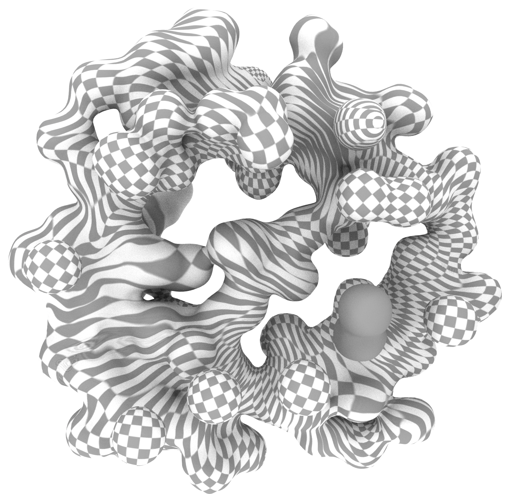

Digital Waste
Digital waste is the idea of online pollution. Devoid of value, usability, and need, digital waste is neglected. We simply dispose of it as if by doing so it no longer exists (deleting it, forgetting about it, clearing it, uploading it into a cloud, backing it up somewhere). Essentially, this waste goes to a place that does not belong in our imagination and is thrown into spaces outside the dominion of care. When we dispose it, it's as if we perform some kind of magic trick, a wishful way of thinking: it disappears from this world. It's quite a supernatural or even a paranormal intimation. Waste goes into a parallel universe we have nothing to do with; an underworld, a negative space.
Files
Name
Date Modified
Size
Kind

Screenshot-111.png
15 April 1986 at 4:12AM
849KB
PNG image
My-Movie1.mov
08 September 1986 at 6:57PM
129MB
MOV movie
this password already exists
21 January 1986 at 8:01PM
0KB
Plain Text

00:03:56:13
29 February 1986 at 11:11AM
--
MOV Movie